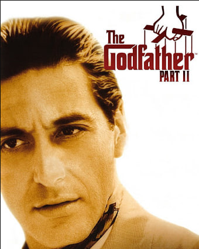

Francis Ford Coppola
Krikštatėvis II (angl. The Godfather Part II) – 1974 m. JAV epinis kriminalinis filmas, kurį režisavo ir prodiusavo Frensis Fordas Kopola. Scenarijų Kopola parašė kartu su Marijumi Pjuzu. Vaidino Alas Pačino, Robertas Duvalis, Diana Kyton ir Robertas De Niro. Dalinai paremtas 1969 m. Pjuzo romanu „Krikštatėvis“, filmas yra ir pirmosios „Krikštatėvio“ dalies tęsinys ir priešistorė, nes filme vaizduojami du laikmečiai.
Pagrindinė istorija pasakoja įvykius po pirmosios dalies, veiksmas sukasi aplink Maiklą Korleonę (Pačino), naująjį Korleonės šeimos doną, kuris bando išsaugoti savo verslą, įvykiai vyksta 1958–1959 m.; kita istorija vaizduojama pasitelkus praeities intarpus, kuriuose vaizduojamas dar jauno Vito Korleonės (De Niro) gyvenimas, nuo jo vaikystės Sicilijoje 1901 m. iki Korleonės šeimos sukūrimo Niujorko mieste.
Filmas buvo išleistas 1974 m. gruodžio 20 d. ir kai kurių kritikų laikomas geresniu už pirmąją dalį.[1] Po šešiolikos metų, 1990 m., pasirodė filmo tęsinys – „Krikštatėvis III“.
